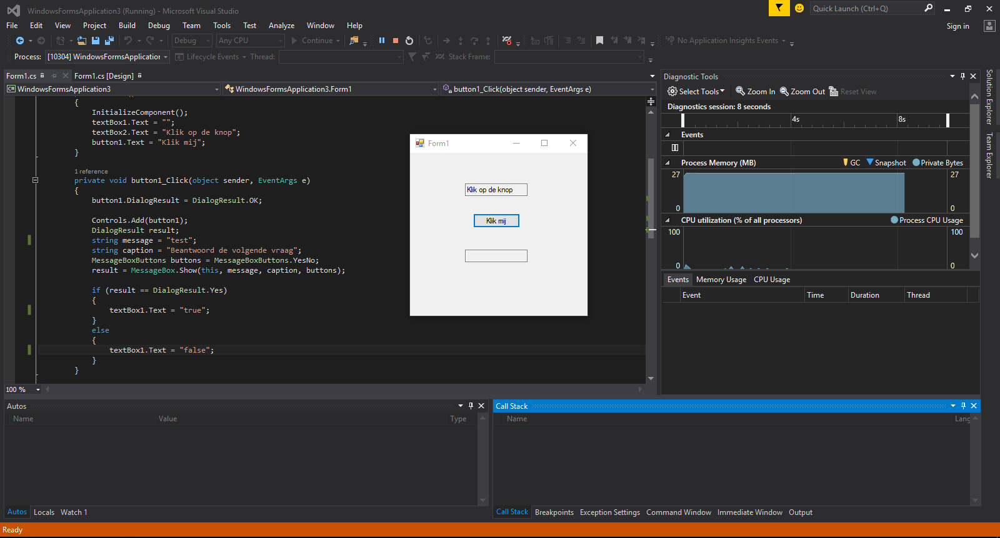
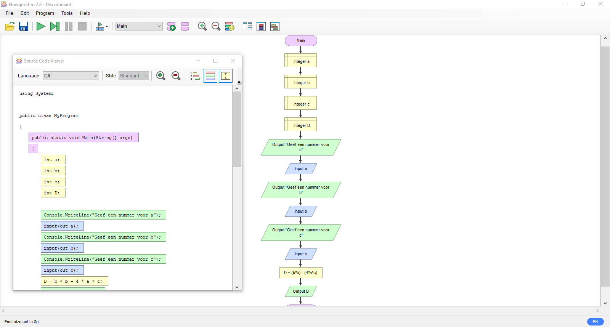

Project 3: Vervolg op discriminant berekenen
Voor dit project was een vervolg van de discriminant opdracht. Hierbij moesten we de x-waardebn uitrekenen met de discriminant. Ook moesten we kijken of er bij de gegeven waarden wel een x-waarde was.


Voor dit project moesten wij een klein programma maken met Flowgorithm en het daarna overzetten in C#.
Hier moesten wij een programma maken in Flowgorithm. Daarna moesten we het overzetten in C# voor console en flow.
 Hier moesten ik een dobbelspel maken met javascript. Dit kun je hier vinden of door te klikken op het kopje dobbelen.
De spelregels zijn:
De eerste ronde:
- Je wint als je bij de eerste worp een 7 of een 11 gooit.
- Je verliest als je bij de eerste worp een 2, een 3 of een 12 gooit.
- Voor elk ander getal (dus een 4, 5, 6, 8, 9 of 10) gaan we door naar de tweede ronde maar we onthouden het getal dat geworpen is. Dit getal is de spelerspunt.
De tweede ronde
- Gooi je een 7 dan verlies je
- Gooi je het spelerspunt dan win je
- Bij ieder ander getal moet je het opnieuw proberen
Voor dit project was een vervolg van de discriminant opdracht. Hierbij moesten we de x-waardebn uitrekenen met de discriminant. Ook moesten we kijken of er bij de gegeven waarden wel een x-waarde was.